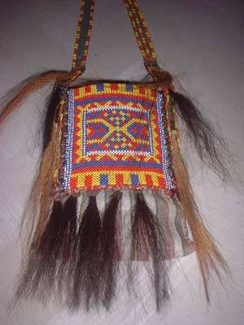

sening 
/sɔniŋ/
n.
“small_bag”
n.
a small brightly decorated bag usually worn by a datu to hold money or betel chew and often worn by women to carry betel chew, or to hold seed when they're planting
Wrd.Gloss: small_bag
Ka sening iyan ka deisek ne kabil ne egpekeiling te puntil ne egpanahuan te minsan nekey rè iya. Due sel-ey kayi wey ke libed naa. Ka me datù iyan eggimuwen ne sening ka sinalapid ne balieg, ka kabaluan dè ne me etew iyan dè sening se innimu ligkat te hinabel.
Due mameen wey manika diyè te sening ku.
I have betel nut in my bag.
Nakapammitew si Eteng te sening din, kunaleg te nalingawan din bes diyè te baley.
Eteng looked for his shoulder bag, but the truth is he left it the house.
Egpanikepen ku dengan ka sening te iney ku su masulug ka sinsilyu ne igtahù.
I used to extract my mother’s belt because it contains lots of coins.
Eng. bag; shoulder bag
OCM: Mats and Basketry (285)
Online dict status: -
Usage level: M
Updated by: RJH,JLM,RJH,AAA,TME
Last updated: 13/Oct/2009
This page last updated: 19/May/2012
Copyright © 2009-2010, Matigsalug Language Christian Association, Inc